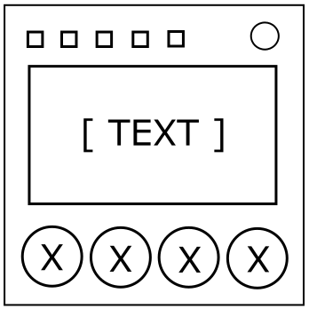

Об Инструкциях
Типа, если бы тут не было инструкций, у нас были бы большие проблемы.
На модуле находится экран, который показывает пять разных текстов. Снизу находятся четыре цветные кнопки. Вы можете проматывать тексты, нажимая на кнопки сверху.
Руководство для этого модуля было "случайно" отредактировано. Пропущенный текст может быть найден на экранах на модуле.
В инструкциях снизу, первый текст на экране заменит все тексты "[ЭКРАН 1]". Второй текст на экране заменит "[ЭКРАН 2]", третий текст на эеране заменит "[ЭКРАН 3]", и т. д.
Когда вы заменили все тексты, следуйте инструкциям, чтобы найти, какую кнопку надо нажать.
Инструкции
Если [ЭКРАН 1] равен нулю, нажмите самую правую кнопку из [ЭКРАН 5] и [ЭКРАН 2]. Если обе кнопки одинаковые, нажмите кнопку [ЭКРАН 4].
Иначе, если [ЭКРАН 3] больше, чем [ЭКРАН 1], нажмите кнопку [ЭКРАН 2].
Иначе, если [ЭКРАН 2] левее, чем [ЭКРАН 4], нажмите кнопку [ЭКРАН 5].
Иначе, если [ЭКРАН 3] больше, чем три, начните с левой кнопки и сосчитайте N кнопок, переходя с четвёртой на первую кнопку, когда нужно перейти дальше четвёртой, где N - [ЭКРАН 1].
Иначе, если [ЭКРАН 2], [ЭКРАН 4], и [ЭКРАН 5] - разные кнопки, нажмите на кнопку, которая НЕ [ЭКРАН 2], [ЭКРАН 4], или [ЭКРАН 5].
Иначе, нажмите кнопку [ЭКРАН 4].